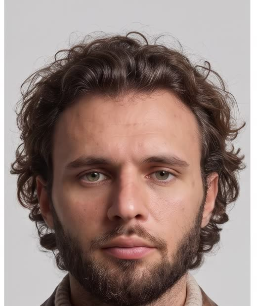
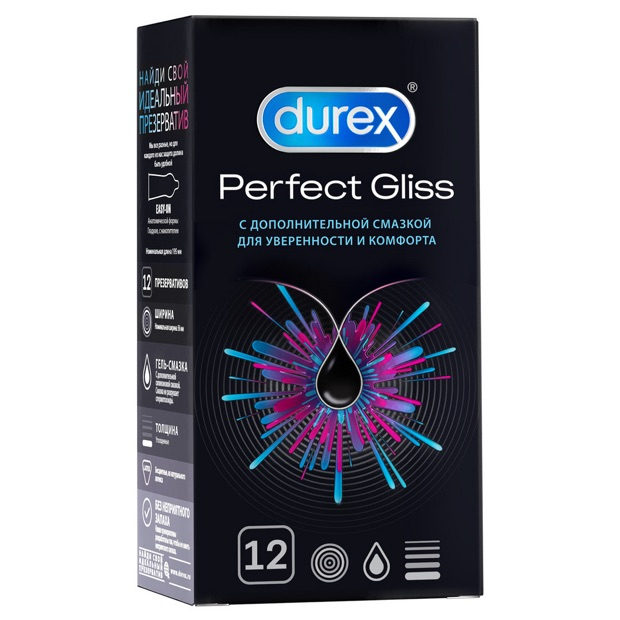

Ограбление
поезда
Герой на мотоцикле догоняет товарный поезд, простреливает замок, перепрыгивает в вагон — а внутри ящики с соломой, доверху набитые твоим товаром. В финале снимает шлем, улыбается и говорит «Oh, yes.» Восемнадцать секунд, 16:9. Промпт универсальный — менять в нём ничего не нужно.


Почему это работает
Проверка по таймкодам
Музыка
Ограбление озвучиваем абсолютно всерьёз, как настоящий боевик. А там, где зритель ждёт эпичного взрыва на ревиле, вместо него вступает музыка «из другого фильма», подходящая товару. Этот анти-дроп и есть шутка: ухо понимает, что в ящиках, раньше глаза.
- Три трека отдельно — в генераторе, где задаётся длительность: Stable Audio или ElevenLabs Music. Звуки погони, выстрел и реплика остаются из генерации Seedance.
- Трек 1 один для всех товаров. Треки 2 и 3 — пара под категорию: интимные товары, еда, техника, косметика, детские.
- Сборка одной командой ffmpeg — держит последний кадр ещё 1.2 секунды под смех, проседает боевик на слоумо, обрывает его в 11.8 и запускает ревил.
Запуск тренда
- Звук загружается как оригинальный. Тренд живёт на кнопке «использовать звук», а звук тренда — весь микс целиком: боевик, анти-дроп, реплика и акцент.
- Первый ролик не выходит один. В первые 48 часов нужны 5–7 версий от разных авторов с разными товарами — это лучший сигнал «это тренд».
- Подпись, которая собирает комментарии: «а что бы вы нашли в своём вагоне? 👇»
- Чувствительные категории. У рекламных кабинетов есть ограничения на продвижение контрацептивов, алкоголя и БАДов. Для органики это не так критично, но перед платным посевом проверь правила.
- Коммерческая лицензия. Проверь, что тариф музыкального генератора разрешает коммерческое использование.
Весь пакет
В буфер уходит всё: основной промпт, промпт перегенерации финала, склейка, музыка по категориям, сборка и вариант со своим шлемом — разделено заголовками с номерами.
============================================================================== 1. ОСНОВНОЙ ПРОМПТ — 18 СЕК, 16:9, SEEDANCE 2.5 Рефы: лицо → @Image1, товар → @Image2. Менять ничего не нужно ============================================================================== SCENE CONTEXT Present day, in an arid desert under a bright blue sky. The lead character, in a full-face motorcycle helmet with a clear visor, rides a modern adventure motorcycle flat out beside a moving freight train, shoots the padlock off a boxcar door, leaps from the motorcycle onto the moving car, slides the side door open, steps inside, takes off the helmet, and finds the car packed with crates of the same product. The train runs continuously for the whole sequence. Rider and train travel toward frame right; the train runs on the rider's left, behind the rider from the camera's side. ACTIVE REFERENCES @Image1 — the lead character: identity reference only. Face, facial proportions, hairstyle, hair colour, age impression and body type come from @Image1. The face reads through the clear visor in every helmeted shot, the hair appears as the helmet comes off, and the bare face carries the final shot. Every garment comes from the WARDROBE block and fully replaces whatever is worn in @Image1. A relaxed, low, warm speaking voice natural to the person in @Image1. 100% matches the reference. @Image2 — the cargo product: the single item repeated throughout every crate in the boxcar, with its shape, colours, front face, label and logo exactly as in the reference. 100% matches the reference. LOCATION MAP Foreground: hard cracked desert ground, rocks, dry scrub and a rough gravel service road running parallel to the railway. Midground: the freight train — a pair of heavy dark grey modern diesel locomotives pulling a long line of steel boxcars with faded paint, long orange rust streaks running down from every seam and rivet line, iron ladders and grab bars at each car end. Each boxcar is a long closed steel box with one heavy sliding door hung on a horizontal rail in the middle of each long side; both ends of every car are solid steel walls. A line of weathered wooden utility poles runs beside the track. Background: flat desert running to distant barren red-brown mountains, windblown dust hanging low. Light comes from a high hard sun in a bright blue sky, falling from frame left at 55° elevation. The camera works on the shadow side of the rider, on the open-desert side opposite the train. FIRST FRAME / BLOCKING Close side view at chest height, 40° semi-profile on the rider's right side. The lead character rides the matte black motorcycle toward frame right wearing a plain matte black full-face motorcycle helmet with a clear visor, visor closed, the eyes, brows and bridge of the nose visible through it, torso leaning slightly forward into the speed, right hand on the throttle. The rust-streaked steel boxcars stream past behind toward frame right. Dust and gravel spray up from the rear wheel. FORMAT MODE Timed multishot. Cuts land only at 1.6s, 3.2s, 5.0s, 6.8s, 7.7s, 9.5s and 11.0s. From 11.0s to 18.0s the camera runs one continuous shot and does not cut on its own. OPTICS 0.0s to 1.6s — 29° portrait compression, close side shot opening to reveal rider, motorcycle and train, no drift mid-segment, 29° held to the cut. 1.6s to 3.2s — 18° natural portrait, CU on the face through the visor, no drift mid-segment, 18° held to the cut. 3.2s to 5.0s — 63° observational, WS side-on establishing, no drift mid-segment, 63° held to the cut. 5.0s to 6.8s — 47° neutral, MS side action, no drift mid-segment, 47° held to the cut. 6.8s to 7.7s — 12° tele-detail, macro ECU on the padlock, no drift mid-segment, 12° held to the cut. 7.7s to 9.5s — 47° neutral, MS on the jump, no drift mid-segment, 47° held to the cut. 9.5s to 11.0s — 47° neutral, MS on the car side, no drift mid-segment, 47° held to the cut. 11.0s to 18.0s — 47° neutral, one continuous interior move, 47° held for the whole move. Rectilinear throughout, prime-lens character, natural motion blur, crisp fine detail. CAMERA 0.0s to 1.6s: camera vehicle alongside at 80 km/h, 130 cm height, starting close and easing back 2 metres to reveal the motorcycle and the train. 1.6s to 3.2s: tracking at 80 km/h, 150 cm height, on the rider's right front at 30° off the line of travel, a slight 1–2 cm road tremor. 3.2s to 5.0s: tracking at 80 km/h from 25 metres out on the desert side, 4 metres high, the central section of the train filling the frame edge to edge and running beyond both edges, the rider large and clearly readable in the lower middle third of frame beside the central cars. 5.0s to 6.8s: tracking at 80 km/h, 150 cm height, the boxcar behind and slightly to frame right of the rider. 6.8s to 7.7s: macro camera riding with the car, locked to the door latch. 7.7s to 9.5s: tracking at 80 km/h close to the rider, 160 cm height. 9.5s to 11.0s: tracking at 80 km/h level with the door, 200 cm height. 11.0s to 18.0s: stabilised glide inside the boxcar as described in ACTION. High-end digital cinema tonal character with wide latitude and gentle highlight roll-off. ACTION 0.0s to 1.6s — The lead character rides fast beside the train at 80 km/h, leaning slightly forward, both hands on the bars, the engine howling. Gravel and dust spray up from the rear wheel. The camera eases back and the helmeted head and shoulders, the matte black tank and fairing of the motorcycle and the moving boxcars behind resolve into frame. 1.6s HARD CUT 1.6s to 3.2s — Close on the face through the clear visor. The eyes are narrowed against the glare, brows drawn low, fixed ahead. A faint reflection of the passing rust-streaked boxcars slides across the visor surface over the eyes. Fine dust ticks against the visor and streams over the matte black shell. The helmet rides the vibration of the engine and the road; the eyes shift toward the train first, then the head turns slowly after them and holds, focused, calm and determined. 3.2s HARD CUT 3.2s to 5.0s — Wide and side-on: the long freight train thunders across the desert toward frame right at 80 km/h, heat shimmer rising off the dark locomotives up front. The lead character on the matte black motorcycle rides parallel beside the central cars at matching speed, large and clearly readable in the lower middle third of frame as a dark figure against the pale desert, a long plume of dust trailing behind the motorcycle and the train. 5.0s HARD CUT 5.0s to 6.8s — Riding level with a boxcar, right hand holding the throttle steady, the lead character reaches across with the left hand into a chest holster under the jacket, draws a black semi-automatic pistol, thumbs the safety off, extends the arm toward the boxcar door latch and fires once, the eyes sighting along the arm through the visor. A clear muzzle flash glints on the visor, a spent casing spins away, the recoil travels back through wrist, forearm and shoulder. The motion is confident and smooth: draw, safety, aim, fire. 6.8s HARD CUT 6.8s to 7.7s — Plays in slow motion at 40% speed. A heavy rust-spotted steel padlock hangs through the door latch hasp and a fixed steel staple on the car frame, holding the sliding door shut, vibrating with the car. The bullet strikes the lock body. Sparks burst outward in several directions, tiny bright metal fragments flash, the shackle snaps and the lock tears off the hasp and flies away out of frame. 7.7s HARD CUT 7.7s to 9.5s — Real time. The lead character holsters the pistol, shifts weight forward, rises to stand on the footpegs with both knees gripping the tank, reaches for the steel ladder at the end of the boxcar, grabs a rung with both hands and steps off the motorcycle onto the bottom rung in one committed move. The riderless motorcycle runs on beside the train for a moment, wobbles, veers away toward the desert and drops onto its side, sliding to a stop across the gravel in a long spray of dust. 9.5s HARD CUT 9.5s to 11.0s — The helmeted lead character hangs on the side of the moving boxcar beside its middle door, left hand locked on a steel grab bar, right hand on the door handle, the face set with effort behind the visor, and drives the heavy steel sliding door sideways along its horizontal rail toward frame left. The door grinds open along the rail, flush against the car side. The car shudders, hardware rattles, wind and dust tear past. Far behind, the fallen motorcycle lies in its settling dust cloud. 11.0s HARD CUT 11.0s to 11.8s — Inside the boxcar, the camera sits at shoulder height directly behind the lead character, who already stands in the open side doorway in the middle of the car's long wall, still in the helmet, facing inward across the car. The door stands open. A main group of crates stands in the middle of the floor and against the far wall opposite the doorway, and more crates fill both closed steel ends of the car; behind the lead character, through the side doorway, the desert streams past in bright sun. The steel floor and walls vibrate, a loose cargo strap sways from a wall ring, dust hangs in the air. The lead character raises both hands to the helmet and lifts it straight up off the head; the hair from @Image1 falls loose over the collar, seen from behind. 11.8s to 16.2s — As the helmet clears the head, the camera glides forward past the lead character's left shoulder, its view running ahead onto the crates, rising to 170 cm height and tilting down so the open tops of the crates are clearly visible, and moves close to the nearest crates. The car is densely packed with open wooden crates lined with golden straw, warm wood and straw glowing against the cold rust-streaked steel. The camera travels in a smooth, unhurried close arc around the main group of crates, sweeping about 180° and continuing toward a near-circle. Every visible crate is filled with repeated instances of @Image2, sized naturally to the product: many pieces per crate for a small item, grouped multiples for a medium item, fewer units per crate across many crates for a large item. In every clearly visible crate, at least one @Image2 item rests on the top layer of straw with its front face, label or logo turned up or slightly toward the camera. At 13.8s the camera settles on one foreground crate and eases in on a single top-facing @Image2 item until it fills the frame, front face and branding crisp and fully readable, holds for 0.8 seconds, then pulls away and continues the same arc through the remaining crates. 16.2s to 18.0s — The arc completes and the camera comes around to the lead character from inside the car, arriving on the bare face in a close three-quarter view, the bright side doorway and the passing desert behind. The helmet is tucked under the left arm. At 16.6s the lead character pushes the flattened hair back with the right hand, looks at the crates with quiet satisfaction, and a slow pleased smile forms. At 17.1s the lead character says slowly, warmly and slightly drawn out: "Oh, yes." PERFORMANCE While helmeted, the eyes carry the performance behind the visor — narrowed against glare, steady, tracking the train — and the body carries the rest: squared shoulders, a locked grip, the slow deliberate turn of the head, total economy in the draw and the jump. In the final shot, restrained and grounded: quiet disbelief turning to satisfaction, the smile arriving slowly and staying small. The bare face is real and lived-in: flushed from the heat inside the helmet, a sheen of sweat at the temples and across the forehead, hair damp at the hairline and pressed flat on top, a faint red pressure line across the cheeks from the helmet pads, desert dust settled along the neck and the edges of the hairline, catch-lights from the bright doorway in both eyes. The face keeps @Image1's exact identity in every shot. Lip and jaw movement matches the line exactly, with the mouth at rest before and after it. PHYSICS Full gravity and inertia at real speed. The motorcycle leans and skips over the gravel, long-travel suspension working hard, the knobby rear tyre throwing stones. The boxcars sway and knock on their couplings. Recoil travels through the arm and the casing tumbles away. The padlock tears off with real mass and spinning momentum. The jump carries the rider's forward momentum into the ladder, the body swinging in against the car. The riderless motorcycle topples with real weight and slides on its side, bars digging into the gravel. The steel door's mass makes it start slow and gather speed along the rail. The helmet lifts off with a slight drag of the lining, and the hair falls with its own weight. Inside, straw fibres tremble with the car's vibration, the products jostle a millimetre on each rail joint, dust drifts and swirls in the light shafts. Contact shadows under every wheel, boot, crate and product. LIGHTING 5600K hard natural desert sun from frame left at 55° elevation, with bright blue skylight filling the shadows outside. The clear visor passes the face through cleanly and carries only faint passing reflections and a thin specular streak of sun along its upper edge; inside the helmet the face sits in soft shade with bounce light from the pale ground lifting the eyes. The matte black helmet shell and motorcycle hold soft broad sheens that keep their shapes readable. Hard glints on the steel ladder rungs and the pistol. Heat shimmer above the locomotives and the gravel. Inside the boxcar, the bright side doorway is the main source, with hard thin shafts of sunlight piercing a row of small rust-eaten holes along the upper walls and a gap along the roof seam, cutting through the suspended dust and laying bright spots and stripes across the straw and the products. In the final shot the doorway rims the hair and cheek with warm light. Haze visible at 30 meters depth outside, rising to thick visible light shafts at 50% dust density inside the car. COLOR GRADE Sun-bleached tan earth and deep saturated blue sky outside, cold grey steel streaked with warm orange rust on the train. The matte black helmet and motorcycle cut dark graphic shapes against the pale desert. Inside the car, cold steel walls surround warm honey-toned crates and golden straw, and the @Image2 items keep their own true colours as the most saturated, most sharply defined surfaces in frame. Rich colour separation, clean contrast, softened highlights. WARDROBE Fixed for the whole sequence, whether the lead character is male or female, and replacing everything worn in @Image1: a plain matte black full-face motorcycle helmet with a clear visor, worn with the visor closed until it comes off inside the car; a worn black leather riding jacket with low-profile padded shoulders and elbows, zipped half open; a plain charcoal cotton t-shirt beneath; a black neck gaiter pulled down loose around the neck; a black nylon chest holster under the jacket carrying a black pistol on the left side; faded dark olive technical riding trousers with reinforced knees; scuffed black leather riding boots with buckles; black leather riding gloves. Desert dust in the leather creases, across the trousers and boots, dulling the matte black helmet shell and speckling the visor edges. The motorcycle is a matte black modern adventure motorcycle with a plain unbadged tank and fairing in clean matte surfaces. AUDIO Diegetic sound only. A high-revving modern twin-cylinder engine note rising and falling with the throttle, the deep diesel rumble of the locomotives and a long low horn blast, steel wheels hammering on rail joints, wind roaring over the helmet, gravel pinging off metal and the visor. The sharp crack of the pistol and the tinkle of the casing. A metallic ping and hiss of sparks as the lock breaks. Boots hitting steel rungs, the motorcycle scraping over gravel. The steel door grinding and rumbling along its rail. Inside the car: steel panels booming softly with each rail joint, fittings rattling, straw rustling, the soft rasp of the helmet lining sliding off. The line "Oh, yes." spoken low and warm at 17.1s. STYLE Photorealistic contemporary desert heist feature film, large-format widescreen look, fine film grain, drifting desert dust and heat haze, tactile steel, rust, leather, wood, straw and dust, sun-baked premium cinematic realism. OUTPUT SETTINGS 16:9, 18 seconds, 4K. Real time in every segment except 6.8s to 7.7s, which runs at 40% slow motion start to finish. POSITIVE LOCKS The lead character carries the exact face, facial proportions, hairstyle, hair colour, age impression and body type of @Image1 in every shot, the eyes and upper face clearly readable through the clear visor in every helmeted close and medium shot. The lead character wears only the WARDROBE outfit in every shot. The plain matte black full-face motorcycle helmet with a clear visor stays on with the visor closed in every shot from 0.0s until it lifts off at 11.0s. The hair from @Image1 falls loose as the helmet comes off, and the bare face carries the final close three-quarter view from 16.2s. The rider is present, large and readable beside the central cars for the whole of the wide shot from 3.2s to 5.0s. The motorcycle stays a matte black modern adventure motorcycle with a plain unbadged tank in every shot it appears in. The train stays a modern diesel freight train of rust-streaked steel boxcars and moves continuously toward frame right at full speed for all 18 seconds. The boxcar's steel sliding door in the middle of its long side opens exactly once, from outside, sideways along its rail, between 9.5s and 11.0s, and stands open in every later shot; inside, both ends of the car stay solid steel walls and the bright opening is always the side doorway. From 11.0s the camera moves continuously: behind the lead character → helmet off → past the left shoulder → close arc over the crates → hero close-up on one @Image2 item at 13.8s → continuing arc → the face → "Oh, yes." Every visible crate holds repeated instances of the same @Image2 item, with at least one top-layer item in each crate showing its front face, label or logo turned up or toward the camera, lying on top of the straw. Cuts land only at 1.6s, 3.2s, 5.0s, 6.8s, 7.7s, 9.5s and 11.0s. ============================================================================== 2. ЕСЛИ ПОПЛЫЛ ФИНАЛ — ВНУТРЕННИЙ ПЛАН ОТДЕЛЬНО, 7 СЕК Те же @Image1 и @Image2. Погоню перегенерировать не нужно ============================================================================== SCENE CONTEXT Present day, inside a steel freight boxcar moving at speed through a sunlit desert. The lead character has just climbed in through the open side door, takes off the helmet, and the camera sweeps around crates packed with the same product before returning to the lead character's face. One continuous shot. ACTIVE REFERENCES @Image1 — the lead character: identity reference only. Face, facial proportions, hairstyle, hair colour, age impression and body type come from @Image1. Every garment comes from the WARDROBE block and fully replaces whatever is worn in @Image1. A relaxed, low, warm speaking voice natural to the person in @Image1. 100% matches the reference. @Image2 — the cargo product: the single item repeated throughout every crate in the boxcar, with its shape, colours, front face, label and logo exactly as in the reference. 100% matches the reference. LOCATION MAP A long closed steel boxcar with faded, rust-streaked walls. One heavy sliding door stands open in the middle of the near long wall, the bright desert streaming past outside it; both ends of the car are solid steel walls. A main group of open wooden crates lined with golden straw stands in the middle of the floor and against the far wall opposite the doorway, and more crates fill both ends of the car. A row of small rust-eaten holes runs along the upper walls and a gap runs along the roof seam. Light comes mainly from the open side doorway. FIRST FRAME / BLOCKING The camera sits at shoulder height directly behind the lead character, who stands in the open side doorway facing inward across the car, wearing a plain matte black full-face motorcycle helmet with a clear visor and a black leather riding jacket. The crates fill the view past the shoulders; behind the lead character, through the doorway, the desert streams past in bright sun. FORMAT MODE One continuous shot, the camera does not cut on its own. Real time start to finish. OPTICS 47° neutral held for the whole shot, rectilinear, prime-lens character, natural motion blur, crisp fine detail. CAMERA Stabilised glide starting at 160 cm height directly behind the lead character, moving as described in ACTION. High-end digital cinema tonal character with wide latitude and gentle highlight roll-off. ACTION 0.0s to 0.8s — The steel floor and walls vibrate with the moving train, a loose cargo strap sways from a wall ring, dust hangs in the air. The lead character raises both hands to the helmet and lifts it straight up off the head; the hair from @Image1 falls loose over the collar, seen from behind. 0.8s to 5.2s — As the helmet clears the head, the camera glides forward past the lead character's left shoulder, its view running ahead onto the crates, rising to 170 cm height and tilting down so the open tops of the crates are clearly visible, and moves close to the nearest crates. The car is densely packed with open wooden crates lined with golden straw, warm wood and straw glowing against the cold steel. The camera travels in a smooth, unhurried close arc around the main group of crates, sweeping about 180° and continuing toward a near-circle. Every visible crate is filled with repeated instances of @Image2, sized naturally to the product: many pieces per crate for a small item, grouped multiples for a medium item, fewer units per crate across many crates for a large item. In every clearly visible crate, at least one @Image2 item rests on the top layer of straw with its front face, label or logo turned up or slightly toward the camera. At 2.8s the camera settles on one foreground crate and eases in on a single top-facing @Image2 item until it fills the frame, front face and branding crisp and fully readable, holds for 0.8 seconds, then pulls away and continues the same arc through the remaining crates. 5.2s to 7.0s — The arc completes and the camera comes around to the lead character from inside the car, arriving on the bare face in a close three-quarter view, the bright side doorway and the passing desert behind. The helmet is tucked under the left arm. At 5.6s the lead character pushes the flattened hair back with the right hand, looks at the crates with quiet satisfaction, and a slow pleased smile forms. At 6.1s the lead character says slowly, warmly and slightly drawn out: "Oh, yes." PERFORMANCE Restrained and grounded: quiet disbelief turning to satisfaction, the smile arriving slowly and staying small. The bare face is real and lived-in: flushed from the heat inside the helmet, a sheen of sweat at the temples, hair damp at the hairline and pressed flat on top, a faint red pressure line across the cheeks from the helmet pads, desert dust along the neck and the edges of the hairline, catch-lights from the bright doorway in both eyes. The face keeps @Image1's exact identity. Lip and jaw movement matches the line exactly, with the mouth at rest before and after it. PHYSICS The car vibrates continuously with the moving train. The helmet lifts off with a slight drag of the lining, and the hair falls with its own weight. Straw fibres tremble, the products jostle a millimetre on each rail joint, dust drifts and swirls in the light shafts. Contact shadows under every crate, boot and product. LIGHTING 5600K. The bright side doorway is the main source, with hard thin shafts of desert sunlight piercing the rust-eaten holes along the upper walls and the gap along the roof seam, cutting through suspended dust at 50% density and laying bright spots and stripes across the straw and the products. In the final moment the doorway rims the hair and cheek with warm light. WARDROBE Replacing everything worn in @Image1: a plain matte black full-face motorcycle helmet with a clear visor, a worn black leather riding jacket zipped half open over a plain charcoal t-shirt, a black neck gaiter loose around the neck, black leather riding gloves, all carrying desert dust. AUDIO Diegetic sound only. Steel panels booming softly with each rail joint, fittings rattling, straw rustling, wind past the open doorway, the soft rasp of the helmet lining sliding off. The line "Oh, yes." spoken low and warm at 6.1s. STYLE Photorealistic contemporary desert heist feature film, large-format widescreen look, fine film grain, tactile steel, rust, leather, wood, straw and dust, sun-baked premium cinematic realism. OUTPUT SETTINGS 16:9, 7 seconds, 4K, real time start to finish. POSITIVE LOCKS The lead character carries the exact face, facial proportions, hairstyle, hair colour, age impression and body type of @Image1 and wears only the WARDROBE outfit. The bright opening is always the side doorway in the middle of the car's long wall; both ends of the car stay solid steel walls. The camera moves continuously: behind the lead character → helmet off → past the left shoulder → close arc over the crates → hero close-up on one @Image2 item at 2.8s → continuing arc → the face → "Oh, yes." Every visible crate holds repeated instances of the same @Image2 item, with at least one top-layer item in each crate showing its front face, label or logo turned up or toward the camera, lying on top of the straw. ============================================================================== 3. СКЛЕЙКА — первые 11 сек основного ролика + новый внутренний план Если генерировали в 4K — замените 1280:720 на 3840:2160 ============================================================================== ffmpeg -i full.mp4 -i interior.mp4 -filter_complex "[0:v]trim=0:11,setpts=PTS-STARTPTS,scale=1280:720,fps=24[v0];[0:a]atrim=0:11,asetpts=PTS-STARTPTS[a0];[1:v]trim=0:7,setpts=PTS-STARTPTS,scale=1280:720,fps=24[v1];[1:a]atrim=0:7,asetpts=PTS-STARTPTS[a1];[v0][a0][v1][a1]concat=n=2:v=1:a=1[v][a]" -map "[v]" -map "[a]" -c:v libx264 -crf 16 -c:a aac -b:a 256k video.mp4 ============================================================================== 4. МУЗЫКА · ТРЕК 1 — ОГРАБЛЕНИЕ (один для всех товаров, 12 сек) ============================================================================== Instrumental straight-faced epic action heist score, 150 BPM, D minor, 4/4, completely serious and cinematic. Pounding low orchestral drums and taiko on the downbeats, a driving low string ostinato in sixteenth notes, sharp brass stabs, a distorted baritone guitar riff doubling the low strings. Opens at full intensity on the very first downbeat with no intro and drives hard for ten seconds. From 10 to 12 seconds it becomes a tense rising build: a snare roll and a string riser climbing higher, unresolved, ending abruptly at the peak. No vocals. 12 seconds. ============================================================================== 5. МУЗЫКА · ТРЕКИ 2 И 3 — ПОД КАТЕГОРИЮ ТОВАРА Трек 2 — анти-дроп на ревиле (6 сек). Трек 3 — финальный акцент после «Oh, yes.» (2 сек) ============================================================================== — ИНТИМНЫЕ ТОВАРЫ, БЕЛЬЁ, ПАРФЮМ · трек 2: Instrumental smooth sultry slow jam, 75 BPM, F major, 4/4, warm, seductive and quietly tongue-in-cheek, played completely straight. A breathy tenor saxophone melody whose phrase swells to its peak at 2 seconds, lush electric piano chords with gentle tremolo, a round fretless bass sliding between notes, soft brushed drums, a soft wah-wah rhythm guitar. Begins instantly on the first downbeat with the full groove, no intro. Late-night lounge romance. No vocals. 6 seconds. трек 3: Short comedic musical button in F major. One playful wah-wah funk guitar lick, answered by a cheeky tenor saxophone trill, finishing on a single soft cymbal swell that rings out. No vocals. 2 seconds. — ЕДА, СНЕКИ, НАПИТКИ · трек 2: Instrumental wholesome sunny family commercial jingle, 120 BPM, C major, bright and innocent, played completely straight. Strummed ukulele, cheerful whistled melody, glockenspiel, light handclaps and a bouncy upright bass. The whistled phrase reaches its happiest peak at 2 seconds. Begins instantly on the first downbeat, no intro. No vocals. 6 seconds. трек 3: Short comedic musical button in C major. A quick cheerful xylophone run upward ending on a single bright triangle ding. No vocals. 2 seconds. — ТЕХНИКА И ГАДЖЕТЫ · трек 2: Instrumental triumphant 8-bit chiptune victory fanfare, 140 BPM, G major, retro video game level-complete celebration, played completely straight. Square-wave lead melody, fast arpeggios, punchy noise-channel drums, a bouncing triangle-wave bass. The melody hits its highest note at 2 seconds. Begins instantly on the first downbeat, no intro. No vocals. 6 seconds. трек 3: Short comedic chiptune button in G major. One rapid rising 8-bit level-up arpeggio ending on a single bright coin-collect chime. No vocals. 2 seconds. — КОСМЕТИКА И УХОД · трек 2: Instrumental serene luxury spa music, 60 BPM, E major, weightless and pampering, played completely straight. Soft flowing harp arpeggios, shimmering wind chimes, airy warm synth pads, a gentle bamboo flute phrase that blooms fully at 2 seconds. Begins instantly with the full texture, no intro. No vocals. 6 seconds. трек 3: Short musical button in E major. A single resonant crystal singing bowl strike that rings out softly. No vocals. 2 seconds. — ДЕТСКИЕ ТОВАРЫ И ИГРУШКИ · трек 2: Instrumental tender music box lullaby, 90 BPM in 3/4, D major, sweet and innocent, played completely straight. A delicate music box melody with celesta, soft pizzicato strings and a gentle glockenspiel, the melody reaching its sweetest note at 2 seconds. Begins instantly on the first downbeat, no intro. No vocals. 6 seconds. трек 3: Short comedic musical button. A single rubber squeaky toy squeak followed by one clear music box note ringing out. No vocals. 2 seconds. ============================================================================== 6. СБОРКА — video.mp4 + heist.wav + reveal.wav + button.wav A, B, C = 0, если генератор выдал ровно заданную длительность ============================================================================== ffmpeg -i video.mp4 -i heist.wav -i reveal.wav -i button.wav -filter_complex "[0:v]tpad=stop_mode=clone:stop_duration=1.2[v];[0:a]apad=pad_dur=1.2[dia];[1:a]atrim=start=A:duration=11.8,asetpts=PTS-STARTPTS,volume=0.8,volume=0.3:enable='between(t,6.8,7.7)',afade=t=out:st=11.78:d=0.02[m1];[2:a]atrim=start=B:duration=5.0,asetpts=PTS-STARTPTS,volume=0.7,afade=t=out:st=4.85:d=0.15,adelay=11800:all=1[m2];[3:a]atrim=start=C:duration=1.4,asetpts=PTS-STARTPTS,volume=0.8,afade=t=out:st=1.0:d=0.4,adelay=17800:all=1[m3];[dia][m1][m2][m3]amix=inputs=4:duration=longest:normalize=0[a]" -map "[v]" -map "[a]" -c:v libx264 -crf 16 -c:a aac -b:a 256k trend_final.mp4 # звук для тренда из готового ролика: ffmpeg -i trend_final.mp4 -vn -c:a copy trend_sound.m4a ============================================================================== 7. ВАРИАНТ СО СВОИМ ШЛЕМОМ — шлем третьим рефом @Image3 Добавить строку в ACTIVE REFERENCES и заменить фразу про шлем в FIRST FRAME, WARDROBE, POSITIVE LOCKS ============================================================================== — строка в ACTIVE REFERENCES: @Image3 — the helmet: a [shell colour] full-face motorcycle helmet with a clear visor, [stripes, spoiler, emblems], and the word [YOUR LETTERING] in [colour] lettering along the [side]. 100% matches the reference. — если у шлема яркий цвет, мотоцикл в WARDROBE: The motorcycle is a matte black modern adventure motorcycle with a plain unbadged tank and [colour] accent graphics on the tank and front fairing.
 ▶
▶
Хочешь снимать такое на заказ?
Шаблон, который бренд может переснять под каждый свой товар, — это не один ролик, а целая рекламная кампания. На обучении даю систему целиком: от первой генерации до портфолио и первых заказов. Приходи на экскурсию — покажу платформу изнутри и работы учеников, разберу твою ситуацию. Ничего продавать не буду.
Записаться на экскурсию → Бесплатно · созвон 30–40 минут · места ограничены